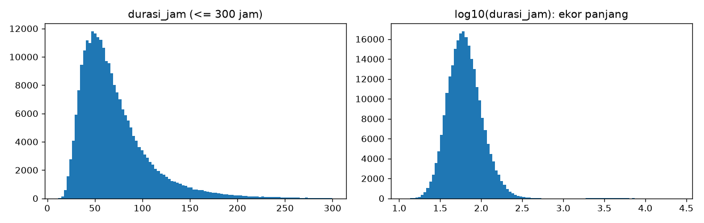
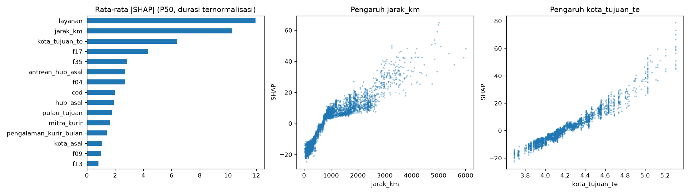
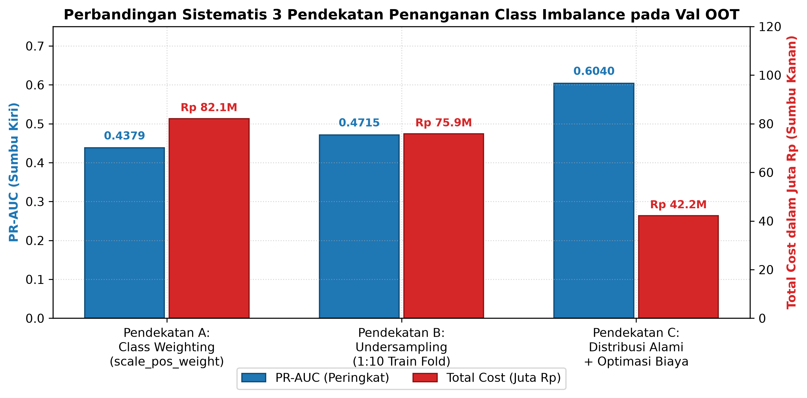
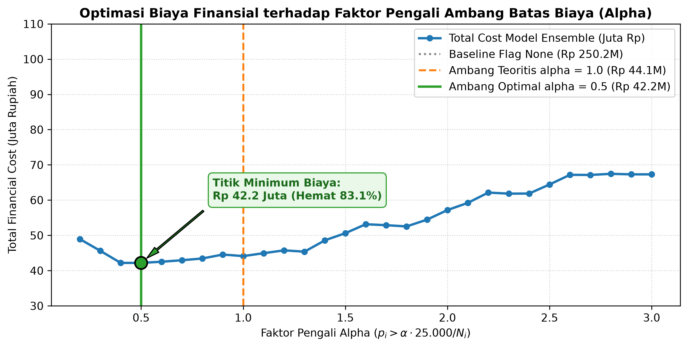
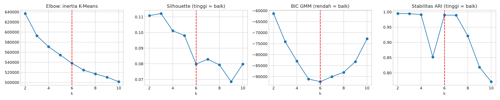

Hands-on Machine Learning: Regresi, Klasifikasi, dan Clustering (tugas kelompok)
Zidan Alghifari (101032330177) · Zacky Yusup Hakim (101032300183)
Repositori: github.com/xcoook1es/uts-ml · Semua angka di laporan ini dibaca dari kode/hasil/tugas1.json, kode/reports/summary_metrics.json, dan kode/hasil/tugas3.json, dan dapat direproduksi dengan python kode/jalankan.py (SEED = 42).
Tujuan: memprediksi durasi_jam paket September–Oktober 2025 saat paket di-pickup, sebagai median (P50) dan batas atas 90% (P90). Data latih 250.000 paket (Januari–Agustus 2025, ditarik 31 Agustus), data uji 60.000 paket. Metrik: pinball loss (q = 0,5 dan 0,9) dan coverage P90 (proporsi y ≤ P90).
| Temuan | Bukti | Tindakan |
|---|---|---|
| Label rusak | 370 durasi > 1000 jam (maks 25.452 jam); 100% kelipatan 6, padahal di data normal hanya 1,6%. 2.804 label “tiba” setelah data ditarik (mustahil). | Dibuang dari data latih (tersisa 247.082 baris). |
| Missing tidak acak | berat_kg kosong 5,6% (uji 5,4%); median durasi 71,4 jam vs 61,1 jam bila terisi. | Ditambah penanda berat_kosong. |
| Sentinel | jarak_km = 0 (703 baris) dan = 9999 (456 baris; juga 130 di uji); jarak wajar terjauh 6.031 km. | Diubah menjadi NaN. |
| Kebocoran | jumlah_scan: SMD train vs uji −1,45; median 8–9 per bulan di latih tetapi 1 di uji (scan bertambah selama perjalanan). | Dibuang. |
| Drift tanpa sinyal | f30: korelasi Spearman 0,27 dengan tanggal, −0,004 dengan target; SMD 0,57. | Dibuang. |
| Kategori baru | Kurir K13 hanya ada di uji (2.342 paket, 3,9%). | Ditangani di bagian d. |
Dampak kebocoran (LightGBM kuantil, latih Januari–Juni, uji Juli–Agustus):
| Skenario | Pinball50 | Pinball90 | Coverage90 |
|---|---|---|---|
Dengan jumlah_scan | 5,362 | 2,947 | 0,876 |
Dengan jumlah_scan, nilainya seperti di data uji | 10,940 | 13,574 | 0,439 |
Tanpa jumlah_scan | 6,755 | 4,340 | 0,874 |
Tanpa jumlah_scan dan f30 | 6,758 | 4,337 | 0,874 |
Dengan jumlah_scan model tampak paling baik, tetapi pada kondisi nyata (scan ≈ 1 saat pickup) coverage P90 runtuh ke 44%. Membuang f30 tidak mengubah skor.

Dua lipatan waktu expanding window dengan horizon dua bulan seperti data uji: Januari–April → Mei–Juni dan Januari–Juni → Juli–Agustus. Pembanding: CV acak 5-fold dengan model yang sama.
| Skema | Pinball50 | Pinball90 | Coverage90 |
|---|---|---|---|
| CV acak 5-fold (std pinball50 antar-fold 0,039) | 6,639 | 4,302 | 0,883 |
| CV waktu, rata-rata 2 lipatan | 6,625 | 4,301 | 0,889 |
| Lipatan terakhir: Juli–Agustus | 6,743 | 4,328 | 0,876 |
CV acak sedikit optimis dibanding lipatan yang paling mirip kondisi uji (6,64 vs 6,74, sekitar 2,5 kali std antar-fold) dan menyembunyikan temuan terpenting: coverage P90 turun dari 0,903 (Mei–Juni) ke 0,876 (Juli–Agustus). Selisihnya kecil karena sumber drift terbesar sudah dibuang di audit. Semua tuning dan perbandingan memakai lipatan waktu.
| Model (rata-rata 2 lipatan waktu) | Pinball50 | Pinball90 | Coverage90 |
|---|---|---|---|
| Baseline: kuantil empiris per layanan × pulau tujuan | 10,120 | 6,212 | 0,900 |
| Ridge pada log(durasi), P90 dari kuantil residu (alpha terbaik = 1) | 7,345 | 4,466 | 0,909 |
| LightGBM kuantil (default) | 6,625 | 4,301 | 0,889 |
| LightGBM kuantil (dituning) | 6,596 | 4,271 | 0,890 |
+ target encoding kota_tujuan + penyamaran kurir (d) | 6,563 | 4,185 | 0,895 |
Ridge memakai Pipeline + ColumnTransformer (imputasi median, standardisasi, one-hot dengan handle_unknown="ignore"). LightGBM memakai objective="quantile" untuk α = 0,5 dan 0,9. Grid 8 konfigurasi (num_leaves, min_child_samples, n_estimators) dinilai hanya di lipatan waktu. P50 terbaik dengan pohon kompleks (127 daun, 600 pohon), sedangkan P90 terbaik dengan pohon sederhana (31 daun, minimal 300 sampel per daun): model kompleks pada ekor distribusi overfit dan coverage-nya turun ke 0,87. Peningkatan dari tuning kecil (6,625 → 6,596).
Cara menangani kota_tujuan (405 level) | Pinball50 | Pinball90 | Coverage90 |
|---|---|---|---|
| Kategori bawaan LightGBM | 6,625 | 4,301 | 0,889 |
| Target encoding (cross-fitting 5-fold, rata-rata log durasi) | 6,580 | 4,233 | 0,892 |
Tanpa kota_tujuan | 6,800 | 4,311 | 0,893 |
Kurir baru. Karena label K13 tidak tersedia, kurir yang dikenal disembunyikan dari data latih lalu diprediksi sebagai “tidak dikenal” (4 kurir: K02, K05, K08, K11, lipatan Juli–Agustus). Rata-rata: kurir dikenal 6,231 / 3,918 / 0,901; tak dikenal tanpa penyamaran 6,753 / 4,104 / 0,885; tak dikenal dengan penyamaran 5% kurir di data latih 6,722 / 4,116 / 0,898. Kurir baru sekitar 8% lebih sulit diprediksi; penyamaran memperbaiki coverage, meskipun efeknya tidak seragam per kurir (K08 sedikit memburuk). Di data uji, kategori disamakan dengan data latih sehingga K13 otomatis menjadi “tidak dikenal”.
Kalibrasi conformal satu sisi (CQR) pada skala log: skor s = log y − log P90, koreksi = kuantil ke-⌈(n+1)·0,9⌉/n dari skor pada data kalibrasi, lalu P90 dikalikan exp(koreksi). Koreksi selalu diverifikasi pada periode sesudah data kalibrasi.
| Skema (model sebelum perbaikan f35) | Faktor | Coverage sebelum → sesudah | Pinball90 sebelum → sesudah |
|---|---|---|---|
| Kalibrasi Mei–Juni → uji Juli–Agustus | 0,985 | 0,881 → 0,870 | 4,203 → 4,244 |
| Kalibrasi Juli → uji Agustus | 1,040 | 0,887 → 0,910 | 4,015 → 4,008 |
Kalibrasi dari periode lama justru memperburuk karena kondisi berubah; jaminan conformal hanya berlaku bila data kalibrasi mirip dengan periode prediksi, sehingga dipakai bulan terbaru. Hanya 6 baris mengalami quantile crossing (P90 < P50) dan diperbaiki dengan max(P90, P50).
| Kelompok (lipatan Juli–Agustus) | Galat relatif (pinball50 / median durasi) | Coverage90 |
|---|---|---|
| Layanan | hemat 11,6%, ekspres 10,8%, reguler 10,1%, kargo 9,6% | 0,874–0,887 |
| Pulau tujuan | Papua 12,5%, Maluku 12,1%, Kalimantan 11,9%, …, Jawa 9,4% | 0,867–0,891 |
| Mitra kurir | K07 14,9%; kurir lain 10,1–10,6% | K07 0,605; lainnya 0,89–0,92 |
Temuan K07. Median durasi K07 naik dari ≈59 jam (Januari–Juni) ke ≈77 jam (Juli–Agustus), dan pada saat yang sama fitur f35 K07 naik dari 0,985 ke 1,28 (kurir lain stabil ≈1,005; di data uji K07 tetap 1,281). Korelasi f35 dengan median durasi antar-kurir 0,997, sehingga f35 berperilaku sebagai indeks kelambatan kurir yang tersedia saat pickup. Model pohon tidak dapat mengekstrapolasi ke nilai f35 yang belum pernah dilihat. Perbaikan: model dilatih pada durasi / f35 lalu prediksi dikalikan kembali dengan f35.
| Lipatan Juli–Agustus | Pinball50 | Pinball90 | Coverage90 | K07: coverage90 |
|---|---|---|---|---|
| Sebelum (v1) | 6,675 | 4,203 | 0,881 | 0,605 |
| Target / f35 (v2) | 6,483 | 4,030 | 0,895 | 0,792 |
Di Mei–Juni (tanpa perubahan) v1 dan v2 setara (6,451 vs 6,465). Model v2 hampir terkalibrasi dengan sendirinya (coverage Agustus 0,9015), sehingga koreksi conformal final hanya ×1,007. SHAP (TreeSHAP bawaan LightGBM, 5.000 sampel; jumlah kontribusi + baseline sama dengan prediksi) menempatkan layanan, jarak, dan target encoding kota tujuan sebagai fitur terpenting, diikuti f17, f35, dan antrean hub; durasi naik seiring jarak.

Model final. Dilatih pada seluruh 247.082 baris bersih dengan semua keputusan di atas; P90 dikalikan 1,007 dan dipaksa ≥ P50. prediksi_regresi.csv: 60.000 baris, median P50 63,1 jam, median P90 83,9 jam.
Tujuan: memprediksi probabilitas is_fraud transaksi September–Oktober 2025 dan memutuskan transaksi yang ditandai untuk ditinjau (biaya Rp 25.000 per transaksi; fraud yang lolos merugikan sebesar nominalnya). Data latih 403.077 transaksi (fraud 0,65%, 2.622 kasus), data uji 106.674 transaksi. Rata-rata nominal fraud Rp 1.209.456, atau 48,4 kali biaya review.
Label belum lengkap (right-censoring). Tingkat fraud turun ke 0,0000% pada 29–31 Agustus, karena fraud baru terkonfirmasi setelah investigasi. Transaksi dalam 21 hari terakhir (setelah 10 Agustus) dikeluarkan dari data latih (embargo), menyisakan 367.610 transaksi matang. Kebocoran: flag_review_manual (tingkat fraud 30,4% saat bernilai 1 vs 0,13%) adalah tindakan setelah transaksi; PR-AUC model dasar turun dari 0,338 menjadi 0,228 tanpa kolom ini, sehingga kolom ini dibuang.
Validasi out-of-time: latih 1 Januari–17 Juli (327.091 baris), purge gap 3 hari (untuk fitur rolling seperti trx_7h), validasi 21 Juli–10 Agustus (35.805 baris, fraud 0,66%). Embargo 21 hari memastikan label validasi sudah cukup matang. Biaya tanpa deteksi pada lipatan validasi: Rp 250.166.288.
114 fitur dihitung hanya dari informasi sebelum transaksi: kecepatan transaksi (rasio trx_1j/trx_24j, transaksi beruntun < 2 menit), pengurasan saldo (saldo setelah transaksi, indikator > 90% dan > 99% saldo), skor pengambilalihan akun (perangkat baru, ganti password, gagal login, IP luar negeri), kecepatan geografis, risiko merchant, fitur jam siklis, serta target encoding kausal berbasis expanding window untuk id_pengguna, id_merchant, email_domain, dan kategori_merchant.
| Model (lipatan validasi) | PR-AUC | Total biaya (Rp) |
|---|---|---|
| Logistic Regression | 0,4315 | 215.364.200 |
| LightGBM | 0,4017 | 99.859.496 |
| CatBoost | 0,5366 | 67.057.200 |
| XGBoost | 0,5841 | 54.093.200 |
| Pendekatan ketimpangan kelas | PR-AUC | Total biaya (Rp) |
|---|---|---|
Class weighting (scale_pos_weight) | 0,5042 | 80.535.000 |
| Undersampling 1:10 | 0,4912 | 80.328.900 |
| Distribusi alami (LightGBM, sama seperti tabel model) | 0,4017 | 99.859.496 |
| Distribusi alami + kalibrasi + ensemble + aturan biaya (pendekatan final) | 0,6040 | 42.182.400 |
Weighting dan undersampling menaikkan PR-AUC LightGBM tetapi merusak kalibrasi probabilitas. Kelompok memilih distribusi alami lalu menangani ketimpangan pada tahap keputusan (ambang berbasis biaya), karena aturan biaya membutuhkan probabilitas yang terkalibrasi.

Uji Kolmogorov–Smirnov train vs uji menunjukkan v15 bergeser ekstrem (KS = 0,5055; fitur lain < 0,026), sehingga v15 dibuang. Adaptasi jendela latih: expanding window PR-AUC 0,4017, sliding 3 bulan 0,3835, time-decay 0,4013 (biaya terendah Rp 95.235.200). Karena fraud langka, riwayat panjang lebih bermanfaat daripada jendela pendek; model final memakai expanding window.
Isotonic regression menurunkan log-loss XGBoost dari 0,01704 ke 0,01507 (Brier 0,003841 → 0,003516). Ensemble 80% XGBoost + 20% CatBoost: PR-AUC 0,6040, log-loss 0,01490. Transaksi ditandai bila ekspektasi kerugian melebihi biaya review: pi · Ni > α · 25.000; transaksi bernominal ≤ Rp 25.000 tidak pernah ditandai.
| Strategi | Total biaya (Rp) | Ditandai | Recall | Penghematan |
|---|---|---|---|---|
| Tidak menandai apa pun | 250.166.288 | 0 | 0% | 0% |
| Menandai semua | 895.125.000 | 35.805 | 100% | rugi |
| Ambang tetap p > 0,05 | 75.339.000 | 582 | 75,2% | 69,9% |
| Aturan biaya, α = 1 | 44.114.300 | 573 | 74,0% | 82,4% |
| Aturan biaya, α = 0,5 (dipilih) | 42.182.400 | 907 | 80,7% | 83,1% |

Per kanal (lipatan validasi): QRIS menyumbang biaya terbesar (Rp 20,0 juta, terutama 19 fraud lolos senilai Rp 16,2 juta; PR-AUC 0,154), diikuti aplikasi (Rp 9,6 juta), VA (Rp 5,6 juta), kartu (Rp 4,4 juta), dan web (Rp 2,6 juta; PR-AUC tertinggi 0,913). Per nominal: 8 fraud mikro (≤ Rp 25.000) lolos dengan kerugian hanya Rp 162.000, sedangkan sebagian besar kerugian berasal dari transaksi > Rp 1 juta (Rp 13,5 juta dari 9 fraud lolos). Fitur terpenting: target encoding pengguna dan merchant, trx_1j, saldo setelah transaksi, dan skor pengambilalihan akun.
Prediksi uji. Model dilatih ulang pada 367.610 transaksi matang. prediksi_klasifikasi.csv: 106.674 baris, rata-rata probabilitas 0,0085, 3.364 transaksi (3,15%) ditandai.
Tujuan: membagi 120.000 pelanggan (ringkasan 90 hari, 60 kolom) ke segmen yang bermakna dan dapat ditindaklanjuti, serta menandai pelanggan yang tidak cocok dengan segmen mana pun sebagai -1.
rata2_keranjang kosong 6.736 baris (5,6%), diimputasi median.belanja_90h 7,47 dan recency_hari 7,94 → 0,82).belanja_30h dan frekuensi_30h redundan dengan versi 90 hari (Pearson 0,926), dibuang.n01–n15 tidak berbeda antar cluster sementara (ANOVA F 0,26–1,90, semua p > 0,10) dan menurunkan silhouette pada ablasi, dibuang. kota_tier juga tidak berbeda (F ≤ 1,35), dibuang.| Metode | Tahap c (dengan perangkat, k = 5): silhouette / stabilitas ARI | Fitur final, k = 6: silhouette / ARI vs K-Means |
|---|---|---|
| K-Means | 0,104 / 0,987 | 0,080 / 1,000 |
| Gaussian Mixture | 0,088 / 0,566 | 0,011 / 0,131 |
| Agglomerative (Ward, 15.000 sampel + NearestCentroid) | 0,090 / 0,979 | 0,092 / 0,693 |
| HDBSCAN | 0,140; 2 cluster, 89% satu cluster | – |
K-Means dipilih: paling stabil dan cepat, dan strukturnya sejalan dengan Agglomerative. GMM dengan kovarians penuh di 40 dimensi tidak stabil, dan HDBSCAN menggabungkan hampir semua titik menjadi satu cluster.
| k | Silhouette | BIC GMM | Stabilitas ARI | Cluster terkecil |
|---|---|---|---|---|
| 3 | 0,112 | −74.116 | 0,994 | 20,0% |
| 4 | 0,101 | −82.990 | 0,991 | 12,5% |
| 5 | 0,098 | −91.100 | 0,852 | 10,4% |
| 6 | 0,080 | −92.319 | 0,990 | 10,2% |
| 7 | 0,083 | −90.014 | 0,989 | 5,1% |
| 8 | 0,079 | −88.054 | 0,921 | 5,1% |
Kriteria tidak sepakat: silhouette menyukai k kecil, BIC terendah di k = 6, dan k = 6 stabil (k = 5 tidak). k = 6 dipilih karena didukung BIC dan stabilitas serta menghasilkan segmen yang jelas berbeda. Silhouette yang rendah di semua k menunjukkan segmen saling bersinggungan.

K-Means k = 6 diulang pada 20 sampel bootstrap (separuh data, seed berbeda); setiap model memberi label pada semua pelanggan. ARI terhadap model penuh 0,9887 ± 0,0017 (minimum 0,9845); ARI antar-ulangan 0,9840 (190 pasang). Segmen sangat stabil.
| Segmen (porsi) | Profil (median) | Aksi marketing |
|---|---|---|
| Pendatang Baru Penjelajah (10%) | Member 3,5 bulan, 3 pesanan, 9,9 sesi/minggu tetapi konversi 2% | Onboarding: voucher pembelian kedua dan rekomendasi personal |
| Pembeli Premium Elektronik (15%) | Keranjang Rp 577 ribu, belanja Rp 4,2 juta, voucher 16%, elektronik & perabot, usia 40, 62% iOS | Loyalitas premium: cicilan 0% dan akses awal produk, bukan diskon |
| Pelanggan Tertidur (18%) | Recency 53 hari, 1 pesanan, member 27 bulan, COD 47% | Win-back: pesan “kami rindu” dan gratis ongkir COD terbatas |
| Fashionista Paylater (11%) | Paylater 81%, 2 retur, fashion & gadget, belanja malam, usia 26 | Promo cicilan paylater dan panduan ukuran/try-on untuk menekan retur |
| Pemburu Promo Muda (23%) | Voucher 85%, flash sale 71%, keranjang Rp 102 ribu, voucher digital & kecantikan, malam, usia 25 | Flash sale malam dan gamifikasi poin dengan batas subsidi |
| Keluarga Setia (23%) | 15 pesanan/90 hari, konversi 19%, ibu & bayi dan makanan, belanja pagi, usia 38 | Langganan/pesan ulang otomatis dan bundel kebutuhan rumah tangga |
Pelanggan yang jaraknya ke pusat cluster terdekat melebihi persentil ke-99 diberi label -1: 1.200 pelanggan (1,0%). Ambang dibuat ketat supaya pelanggan normal tidak salah diberi label anomali. Profil mereka mencolok: 13,1 sesi per minggu (normal 5,5), 14 klik iklan (normal 5), tetapi konversi 1% (normal 9%), pola yang patut ditinjau sebagai kemungkinan bot atau akun tidak wajar. cluster.csv: 120.000 baris dengan label -1 sampai 5.
Python 3.12, scikit-learn 1.9.1, LightGBM 4.7.0, pandas 3.1.1, numpy 2.5.4; versi lengkap di kode/requirements.txt. Data diekstrak ke data/. Perintah python kode/jalankan.py menjalankan Task 1–3 dan membuat ulang laporan ini. Penggunaan AI dan pembagian kerja dijelaskan di kontribusi.md.